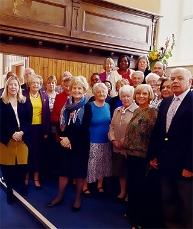

Who Are we?

We are a group of Christian believers who worship at the Ystrad Mynach Seventh-Day Adventist Church, situated in the heart of the Welsh valleys.
As Christians, our desire is to share Jesus, the light if the world, within our church family and in the wider community.
Our church is made up of people from all backgrounds, ages and nationalities.
We enjoy sharing in a loving and inclusive environment where everyone feels welcome.
We would love you to be part of this too.
Church Services
We meet for worship on Saturday/Sabbath mornings.
1145 – Family Worship
We celebrate communion every quarter.
There are also three small groups meeting on Wednesday evenings for fellowship and Bible study. Please contact us for details.